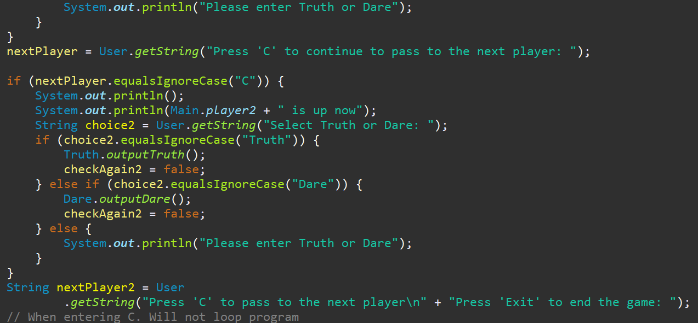

My Journey
From the Beginning
I was born in April 1996 and grew up in Winchester, Ontario, Canada. To make it a short story, earned my diploma in Radio Broadcasting from Algonquin College in 2017. The following year, I landed a part-time position at Jewel 98.5 working promotions.Change of Career
In March 2020, I was let go from my radio job. I was encouraged to apply for Computer Programming at Algonquin College in early 2024. After 7 years since my last graduation, I got ACCEPTED into the program!My Focus
My current focus is front-end development. I'm passionate about delivering quality web applications to clients. Through my ongoing studies in HTML5, CSS3, and JavaScript, I'm committed to reaching the highest level of proficiency in web development.What's Next?
In January 2026, I'll return for my final semester of Computer Programming. My goal is not only to graduate but to network with industry professionals and volunteer with a web or mobile application company to gain real-world experience. The future is uncertain, but I know it's heading up!Academic & Personal Projects
Truth or Dare Game
Console based game allows you to select up to 4 players. Prompts truth or dare and utilizes a random instance to randomly generate truth or dares whenever the player selects the following. Built in Eclipse.
